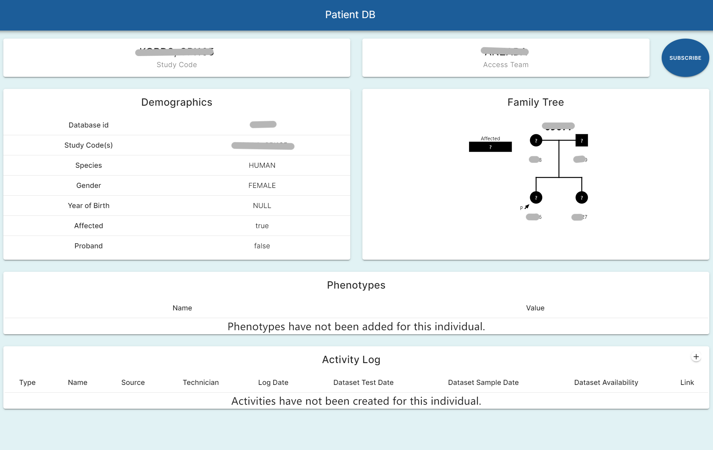
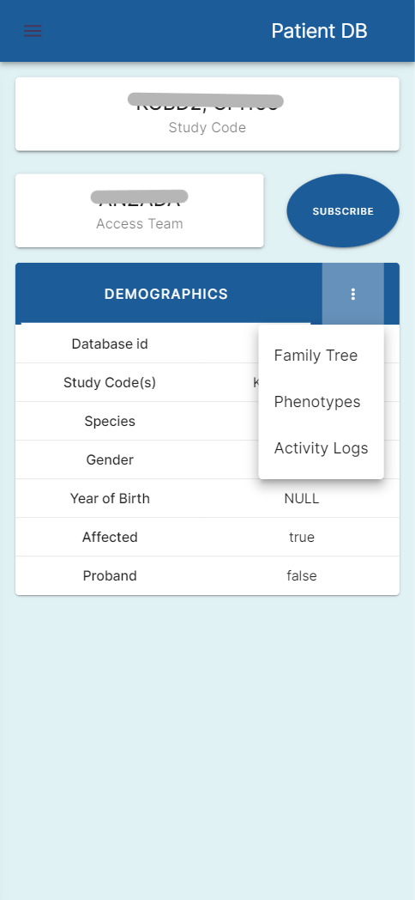

Objectives
The high-level goal of the project is to build a clinician centric website for submitting and viewing patient data and monitoring the progress of patients. The subproject “Summary Page Construction” that I am responsible for is designed to achieve one of the goals of the entire website, which is to provide an intuitive and easy-to-use page to view patient information.
Stakeholders
- Project manager: Project manager from the host is responsible for supervising and managing the entire project implementation process, ensuring that the project is completed on time and meets the user requirements and expected quality standards.
- Developers: Developers are responsible for developing the project.
- Researchers: Medical researchers need to use the summary pages to access patient data to support their research. Researchers using the website are working on personalized medicine technology. They are analysing genes to assess a patient’s immune system and using that information to develop the personalized treatment plan.
- Clinicians: As the end users of the project, clinicians are among the most important stakeholders. They need to use the summary page to have efficient access to patient information.
Activities
- Project Planning: Collaborate with stakeholders to nail down the requirements and made a plan accordingly.
- Development: Used Vue.js for the frontend, Python with FastAPI on the backend, and Postgresql as the database to develop the webpage.
- Testing and Refactoring: Test, review, and refactor the code to ensure the website is robust and user-friendly.
Outcomes
Patient Information Display
The summary page shows basic information, family trees, phenotypes, and logs of treatment activities for each patient. 
Responsive Design
It looks great on both desktops and phones. 
Impact
- For clinicians: Improve the efficiency of clinician’s access and management to patient information.
- For researchers: Accelerate the progress of conducting research and collecting results.
- For patients: Provide better medical services for patients.